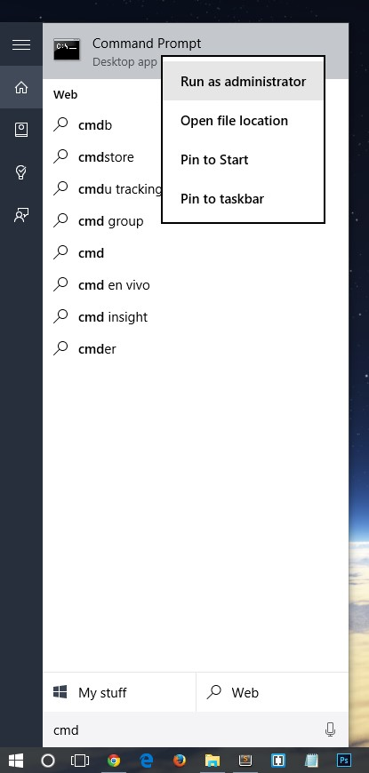
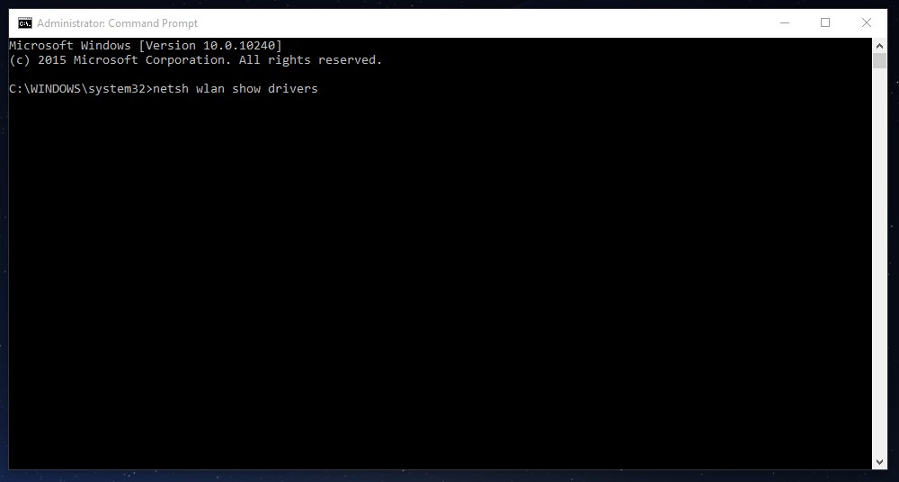
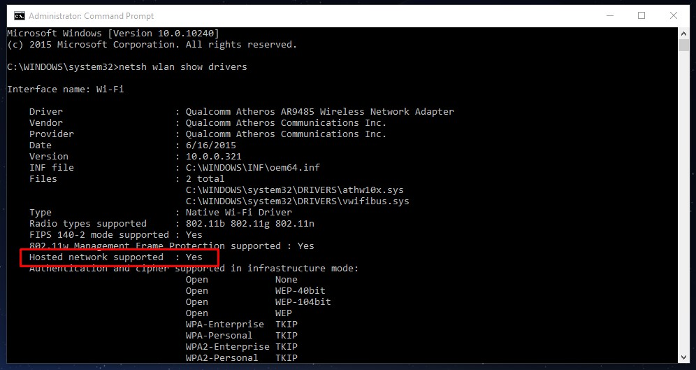

» Compatibilidade de sistema
Em caso de erros ao usar a aplicação, poderá ser necessário verificar se o seu computador suporta redes virtuais.
Para tal, abra uma linha de comando em modo de administrador - escreva “cmd” no menu iniciar, clique com a tecla direita do rato e selecione “Run as administrator”.

Na janela que aparece, introduza o comando “netsh wlan show drivers” e pressione Enter.

Surgirão várias informações. Procure a linha “Hosted Network Supported” – se o valor for “Yes”, então o seu computador deverá conseguir criar redes virtuais, se o valor for “No” então terá de adquirir outra placa de rede wifi mais recente, com suporte para essa funcionalidade.

Em caso de dificuldade, entre em contacto comigo.